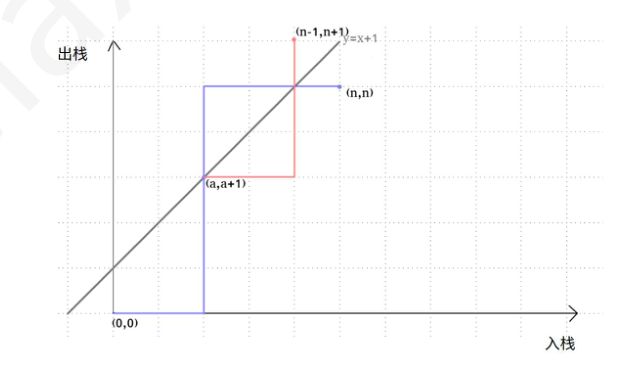
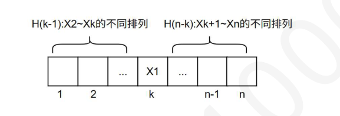
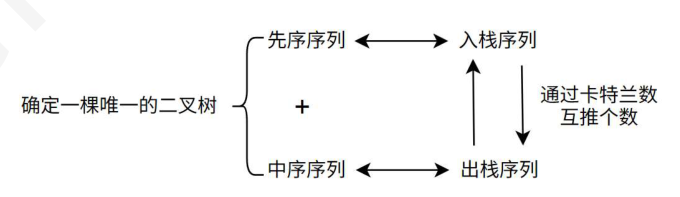
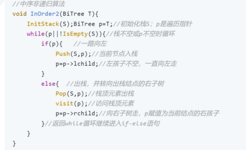
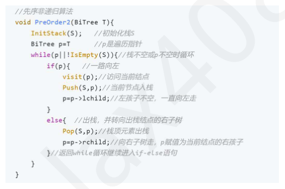
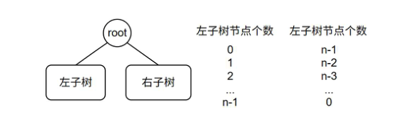
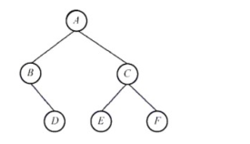

第 61 题
若一棵树有4 个结点，那么其所有可能的树型有（ ）种
A． 4 B． 5 C． 14 D． 24 答案与解析 答案：B
树可以通过孩子兄弟表示法转换成唯一一棵二叉树，所以本题转换成求对应的二叉树的树型有多少种。我们首先分析转化得到的二叉树树型特点，由于树的根节点没有兄弟结点，所以在转换的二叉树中，根节点没有右兄弟，即除根节点之外的3 个结点构成一棵左子树。这个左子树的树型数目就是我们𝑛𝐶2𝑛要求的答案。3 个结点的二叉树不同树型可用卡特兰数来求，𝑛+1 ，代入 n=3 求得答案为 5 。 卡特兰数的题型总结： • 入栈序列为12...n 的出栈序列个数？证明方法一：利用卡特兰数的递推式：𝐻𝑛= 𝐻0𝐻𝑛−1+ 𝐻1𝐻𝑛−2+ . . . + 𝐻𝑛− 𝑛𝐶2𝑛1𝐻0= 𝑛+1当元素1 放在出栈序列第k 个位置时，前面k-1 个位置一定是2~k 共计k-1 个元素的出栈排列个数H(k-1)，右边位置是k+1~n 共计n-k 个元素的出栈序列排列个数H(n-k)，由此得到上述递推式。 𝑛𝐶2𝑛𝑛 −𝐶2𝑛𝑛−1 证明方法二：网格法， 𝑛+1 = 𝐶 2𝑛 入栈操作为横坐标，出栈操作为纵坐标，n次入栈+n次出栈操作即从原点出发到(n, n)的路径个𝑛 ，但是每个时刻，出栈次数不能数，即2n 次操作里面选择n 次入栈（剩下的是出栈）的可能数，即𝐶2𝑛 比入栈次数多，否则就是不合法。如下图，我们可以知道，不合法的操作路径，一定会触碰y=x+1 到达(n, n)，而这样的路径经过y=x+1 反射都会到达点（n-1, n+1），所以所有不合法的路径即从原点出发到点(n-1, n+1)的所有路径数量。 𝑛𝑛−1 = 𝐶2𝑛𝑛 −𝐶2𝑛 综合以上，合法操作路径条数=𝐶2𝑛 𝑛+1 （只要触碰到y=x+1 说明当前状态出栈比入栈次数多，非法序列）， • 出栈序列为12...n 的入栈序列个数？逆向思维，根据上述网格法，其实合法序列就是不同的路径的条数，每一条路径的出栈出栈次序有差异，得到的出栈序列也有差异，那么我们固定出栈序列，通过路径还原成入栈序列，肯定也是不同的。所以结果还是卡特兰数。 •n 个结点二叉树的树型有多少种？证明：利用卡特兰数的递推式：𝐻𝑛= 𝐻0𝐻𝑛−1+ 𝐻1𝐻𝑛−2+ . . . + 𝐻𝑛−1𝐻0思想：确定根节点后，剩余n-1 个结点各自分配在左右子树，形成以上卡特兰数的递推数学模型。 • 进一步，结合树和二叉树的转换（左孩子右兄弟）：含有n 个结点的树的有多少种形态（n-1的卡特兰数） •结合森林和二叉树的转换（左孩子右兄弟）：含有n 个结点的森林的有多少种形态（n 的卡特兰数） • 结合二叉树先序中序：给定先序序列（n 个值不同）的不同二叉树的个数n 个不同权值的结点的二叉排序树的个数（中序确定）首先观察先序和中序的非递归代码，可以发现，先序序列是在入栈的时候输出元素，中序序列是在出栈的时候输出元素，其他代码都一致。即得出：先序等价于入栈序列，中序等价于出栈序列。入栈序列可以通过卡特兰数推出栈序列个数。先序+中序可以确定一棵唯一的二叉树，先序确定，中序序列的4𝐶2∗4不同个数是卡特兰数，所以二叉树的树型即卡特兰数种。n=4 的卡特兰数是𝐶𝑎𝑡𝑎𝑙𝑎𝑛4= 4+1 = 14 。 • n 对括号的不同排列个数：证明可以用坐标路径法。






教材第 25 页 第 62 题
已知森林F 对应的二叉树为T，且该二叉树是一棵BST，其后序序列是1,3,4,2,7,9,8,10,6,5，那么在森林F 中说法错误的是（ ）
A． 有3 棵树 B． 第一棵树的后根遍历是升序序列 C． 森林的度为2 D． 原森林的先根遍历是5,2,1,3,4,6,10,8,7,9 答案与解析 答案：D
原森林的先根遍历是二叉树的先序遍历为5, 2, 1, 4, 3, 6, 10, 8, 7, 9。
教材第 25 页 第 63 题
某二叉树结点的中序序列为BDAECF，后序序列为DBEFCA，则该二叉树对应的森林包括 （）棵树。
A． 1 B． 2 C． 3 D． 4 答案与解析 答案：C
中序+后序可以确定一棵唯一的二叉树。该二叉树如右图：该二叉树对应的森林，树的个数即根结点到最右边叶子节点路径上的结点个数，即A、C、F 三个。

教材第 25 页 第 64 题
设F 是由T1、T2 和T3 三棵树组成的森林，与F 对应的二叉树为B，T1、T2 和T3 的结点数分别为N1、N2 和N3，则二叉树B 的根结点的左子树的结点数为（ ）
A． N1-1 B． N2-1 C． N2+N3 D． N1+N3 答案与解析 答案：A
T1，T2，T3 先分别转化为二叉树，除掉根结点，其它结点都转化为根结点的左孩子，第一棵二叉树不动，后面的二叉树分别是前面二叉树的右孩子。故本题中T1 不动，左孩子结点N1-1。
教材第 26 页 第 65 题
下列说法错误的是（ ）
A． 哈夫曼树是带权路径长度最短的树，路径上权值较大的节点离根较近。 B． 在先序遍历二叉树的序列中，任何节点其子树的所有节点都是直接跟在该节点之后的。 C． 存在这样的二叉树，对它采用任何次序的遍历，结果都相同。 D． 若一个叶子节点是某二叉树先序遍历序列中的最后一个节点，则它必是该树中序遍历序列中的最后一个节点。 答案与解析 答案：D
D：通过只有3个节点（其中a为根节点，b为a的左孩子，c为b的右孩子）的二叉树来验证本叙述是不正确的。C：当二叉树只有一个根节点时，任何遍历的序列均相同。
教材第 26 页 第 66 题
下列说法正确的是（ ） I．所有叶节点深度一致的二叉树，必为完全二叉树。 II．完全二叉树的子树，也一定是完全二叉树。 III．在Huffman 算法过程中，权重小的内部节点必然早于权重大的内部节点被创建。 IV．由同一组互异关键码，按不同次序逐个插入而生成的BST 必互异。 V．在AVL 树中删除节点之后若树高降低，则必然做过旋转调整
A． I、II、III、IV B． II、III、IV、V C． II、III D． II、III、V 答案与解析 答案：C
I 错误，比如3 个结点构成的链；II、III 正确；IV 错误，3214 和3421 和3241 构成的BST 都是一致的；V 错误，比如只有一个根节点。
教材第 26 页 第 67 题
有5 个字符，根据其使用频率设计对应的哈夫曼编码，以下哪个是不可能的哈夫曼编码（ ）
A． 000，001，010，011，1 B． 0000，0001，001，01，1 C． 000，001，01，10，11 D． 00，100，101，110，111 答案与解析 答案：D
在一组哈夫曼编码中，哈夫曼树中只有度为0或2的节点，D 不满足这种条件。
教材第 26 页 第 68 题
已知字符集{a, b, c, d, e, f}，若各字符出现的次数分别为6, 3, 8, 2, 10, 4，则对应字符集中各字符的哈夫曼编码可能是（）。
A． 00, 1011, 01, 1010, 11, 100 B． 00, 100, 110, 000, 0010, 01 C． 10, 1011, 11, 0011, 00, 010 D． 0011, 10, 11, 0010, 01, 000 答案与解析 答案：A
首先排除不满足前缀特性的选项，易知B 选项出现00 是000 的前缀，排除。C选项，10 是1011 的前缀，排除。此时还剩A，D。接着根据频次越高，编码越短的特性。A，D 选项第一个和第二个编码长度刚好是相反的，第一个频次是6，第二个频次是3，所以第一个编码必然比第二个短，所以答案选A。这道题是真题，大家应该学会这种不画图的解法，多利用某些数据结构的性质。
教材第 26 页 第 69 题
下列关于哈夫曼树和哈夫曼编码的陈述中，正确的是（ ）。
A． 一个数据文件由8 位定长度的字符组成，字符集内所有的256 个字符出现的频率大致相同，最高的频率低于最低频率的2 倍，那么此时哈夫曼编码比8 位固定长度编码更有效 B． 哈夫曼树中度为1 的结点数等于度为2 和度为0 的结点数之差 C． 哈夫曼树的结点总数不能是偶数 D． 若从二叉树的任一结点出发，到根结点的路径上所经结点的序列按其关键字有序，则该二叉树一定不是一棵哈夫曼树 答案与解析 答案：C
A 错误，对于题目中的场景，使用哈夫曼编码对应的哈夫曼树是一棵满二叉树。因为从最底层开始，最底层是两两配对的，根据题意对任一频率𝑓𝑖有𝑓𝑖≤𝑓𝑚𝑎𝑥< 2𝑓𝑖，所以没有任何一对的频率超过另外一对的2 倍，进而得出没有任何一个内部结点的频率是同一层的内部结点频率的两倍，所以该哈夫曼树是一个满二叉树。对于编码相应的前缀树是满二叉树情形，没有更优的编码方式了。B 错误，哈夫曼树中不存在度为1 的结点。C 正确，哈夫曼树中𝑛1 = 0, 𝑛2 = 𝑛0 −1，那么总的结点数目𝑛= 𝑛0 + 𝑛2 = 2𝑛0 −1，它是一个奇数。D 错误，对于权值都是正数的结点构成的哈夫曼树，父结点的权值一定是大于它的孩子结点的。
教材第 26 页 第 70 题
以下说法错误的是（ ）
A． 一般在哈夫曼树中，权值越大的叶子离根结点越近 B． 哈夫曼树中没有度数为1 的分支结点 C． 若初始森林中共有n 棵二叉树，最终求得的哈夫曼树共有2n-1 个结点 D． 若初始森林中共有n 棵二叉树，进行n 次合并后才能剩下一棵最终的哈夫曼树 答案与解析 答案：D
初始森林中的n 棵二叉树，每棵树有一个孤立的结点，它们既是根，又是叶子。 n 个叶子的哈夫曼树要经过n-1 次合并，产生n-1 个新结点。
教材第 26 页 第 71 题
假设某段通信电文仅由6 个字母ABCDEF 组成，字母在电文中出现的频率分别为2，3，7， 15，4，6。根据这些频率作为权值构造哈夫曼编码，最终构造出的哈夫曼树带权路径长度与字母B 的哈夫曼编码分别为（这里假定左节点的值小于右节点的值）（）
A． 86，1011 B． 70，1000 C． 86，0001 D． 70，0010 答案与解析 答案：A
题目里要求左节点的值小于右节点的值，所以构造下图所示的哈夫曼树：一棵哈夫曼树的带权路径长度等于树中所有的叶结点的权值乘上其到根结点的路径长度。所以长度：（2+3）* 4+（4+6+7）* 3+15 *1=86，B 的编码（也就是3）为1011。
教材第 27 页 第 72 题
下列选项给出的是从根分别到达两个叶结点路径上的权值序列，能属于同一棵哈夫曼树的是 （）。
A． 26，16，5 和26，10，6 B． 26，16，8 和26，10，5 C． 26，10，5 和26，12，7 D． 26，16，7 和26，16，8 答案与解析 答案：B
A不符合，可以知道，16+10=26，也就是第二层是符合的。但是第三层， 16=5+11，10=6+4，4，5 更小，应该优先合并，而不是4 跟6 合并，不合符哈夫曼树最优二叉树的性质，因此错误。B 选择正确。 C 选项错误，26≠10+12，第二层出错。 D 选项错误，16≠7+8，第三层出错。
教材第 27 页 第 73 题
下列说法正确的是（ ）
A． 哈夫曼树是带权路径长度最小的二叉树。 B． 哈夫曼树是完全二叉树 C． 二叉树是度为2 的有序树。 D． 在任意一棵二叉排序树中删除一个分支节点，接着又将该结点插入到二叉排序树中，则所得到的二叉排序树和删除前的二叉排序树相同。 答案与解析 答案：A
A 正确，带全路径长度WPL 是每个叶节点的带权路径长度之和； B 错误，哈夫曼树只有度为2 和0 的结点，并不一定是完全二叉树。 C 错误，度为2 的有序树不可以是空树，但是二叉树可以。 D错误，BST不同于AVL，删除分支结点一定要找一个前驱或后继来代替，而重新插入这个结点，一定在叶子结点，导致树形发生改变；同样地，删除叶子结点再插入是一定一样的。而AVL 中，删除分支结点在插入，树形可能不改变，比如123 依次插入，删除2 再插入2，树不改变。
教材第 27 页 第 74 题
若度为m 的哈夫曼树中，叶结点个数为n，则非叶结点的个数为（ ）
A． n-1 B． 𝑛𝑚−1 C． 𝑛−1 D． ⌈𝑛𝑚−1⌉-1𝑚−1 答案与解析 答案：C
度为m 的哈夫曼树中，只有度为m 和叶子结点，由公式：度数之和+1=结点总数可以得到，𝑚𝑛𝑚+ 1 =𝑛𝑚+ 𝑛0→𝑚−1𝑛𝑚= 𝑛0 −1 →𝑛𝑚=𝑛−1/𝑚−1，但我们要注意到，度为m 的哈夫曼树，当𝑛−1%𝑚−1= 0，不需要补充虚结点；当𝑛−1%𝑚−1≠0，我们要补充虚结点，补充的虚结点个数为𝑚−1−𝑛−1%𝑚−1。𝑛𝑚 是整数，实际上加上虚结点的叶结点数是>=n 的，所以要取上整。
教材第 27 页 第 75 题
并查集中最核心的两个操作是：①查找，查找两个元素是否属于同一个集合；②合并，若两个元素不属于同一个集合，且所在的两个集合互不相交，则合并这两个集合。假设初始长度为10(0~9)的并查集，按1-2、3-4、5-6、7-8、8-9、1-8、0-5、1-9 的顺序进行合并操作，最终并查集共有（ ）个集合。
A． 1 B． 2 C． 3 D． 4 答案与解析 答案：C
初始时，0~9各自成一个集合。査找1-2时，合并{1}和{2}；查找3-4时，合并{3}和{4}；查找5-6时，合并{5}和{6}；査找7-8 时，合并{7}和{8}；査找8-9时，合并{7, 8}和 {9}；查找1-8时，合并{1, 2)和{7, 8, 9}；査找0-5时，合并{0}和{5, 6}；查找1-9时，它们属于同一个集合。最终的集合为{0, 5, 6}、{1, 2, 7, 8, 9}和{3, 4}，因此答案选择选项C。
教材第 27 页 第 76 题
下列关于并查集的说法中，正确的是（ ）。
A． 并查集不能检测图中是否存在环路的问题 B． 通过路径优化后的并查集在最坏情况下的高度仍是O(n) C． Find 操作返回集合中元素个数的相反数，它用来作为某个集合的标志 D． 并查集基于树的双亲表示法 答案与解析 答案：D
依次探测图的各条边，用并查集检查该边依附的两个顶点是否已属于同一集合(两个顶点的根结点是否相同)。若是，则说明图中存在环路，A错误。经过路径优化后，并查集在最坏情况下的高度远小于O(n)，B 错误。Find操作返回的是集合根结点的下标，元素个数的相反数是P[根的下标]，C错误。
教材第 27 页 第 77 题
下列关于并查集的叙述中，（ ）是错误的。
A． 并查集是用双亲表示法存储的树 B． 并查集可用于实现克鲁斯卡尔算法 C． 并查集可用于判断无向图的连通性 D． 在长度为n 的并查集中进行查找操作的时间复杂度为O(log2n) 答案与解析 答案：D
在用并查集实现Kruskal算法求图的最小生成树时：判断是否加入一条边之前，先查找这条边关联的两个顶点是否属于同一个集合(即判断加入这条边之后是否形成回路)，若形成回路，则继续判断下一条边：若不形成回路，则将该边和边对应的顶点加入最小生成树T，并继续判断下一条边，直到所有顶点都已加入最小生成树T。B 正确。用并查集判断无向图连通性的方法：遍历无向图的边，每遍历到一条边，就把这条边连接的两个顶点合并到同一个集合中，处理完所有边后，只要是相互连通的顶点都会被合并到同一个子集合中，相互不连通的顶点一定在不同的子集合中。C 正确。未做路径优化的并查集在最坏情况下的高度为n，此时查找操作的时间复杂度为O（n），时间复杂度通常指最坏情况下的时间复杂度。D 错误。
教材第 27 页 第 78 题
下列关于并查集的说法，错误的是（ ） I．并查集采用的是树的双亲表示法II．一个集合中根结点的双亲域的绝对值表示集合中的结点个数III．find（ ）操作返回的一定是负值IV．改进的Union（ ）操作使其本身的时间复杂度降低了V．在Union 改进后，进一步，Find（ ）经过压缩路径优化后，可使集合树的深度为𝑂𝑙𝑜𝑔2𝑛
A． III、V B． IV、V C． II、III D． III、IV、V 答案与解析 答案：D
III 错误，返回的是根节点root 的编号(大于0)，而不是S[root]（小于0）。 IV错误，Union()操作始终都是O(1)，改进是小树合并到大树，的目是降低整个集合树的高度至𝑂𝑙𝑜𝑔2 𝑛。 V 错误，Find()经过压缩路径优化后，可使集合树的深度为𝑂𝛼𝑛 ，𝛼𝑛是一个接近常数的函数。 【答案速对】 BADDCCBDDCABCABABCCBACCDDBADCCCAADABCCCABCACDDCCACADDDCBDAAA
教材第 28 页